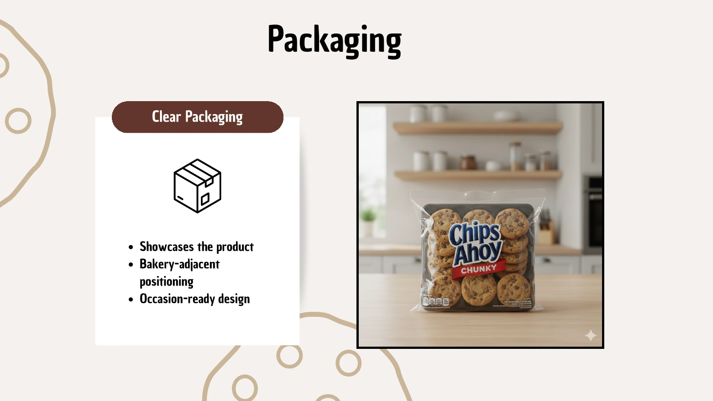

BYU MBA / Consumer growth strategy
Chips Ahoy! Chunky growth strategy
A team course project built around a specific question: how could Chips Ahoy! Chunky grow sales by 5%, or roughly $5 million?
- My role
- Team project contributor
- When
- Fall 2025
- Approach
- Research and customer segmentation
- Target
- 5% sales growth

The challenge
We had a clear growth target, but reaching it required more than proposing a new advertising campaign. We needed a view of the customer, the competitive options, and where the product could have stronger appeal.
How we approached it
Our team compared bakery cookie shoppers, homemade cookie makers, and refrigerated dough shoppers. We recommended focusing on bakery cookie shoppers, with taste and convenience as the key reasons to switch. The idea was to bring new buyers into packaged cookies rather than simply move sales between existing products.
Recommendations
The useful step was moving from observations to a focused choice. Our presentation, “Ready When You Are,” connected that target segment to recommendations for placement, packaging, and promotion. Each choice needed to support the same message: good taste with the convenience of a packaged cookie.

Project outcome
Our team’s recommendation won our section. The 5% figure was the project’s growth target, not a measured sales result. For me, the project was practice in turning customer research into a business recommendation.